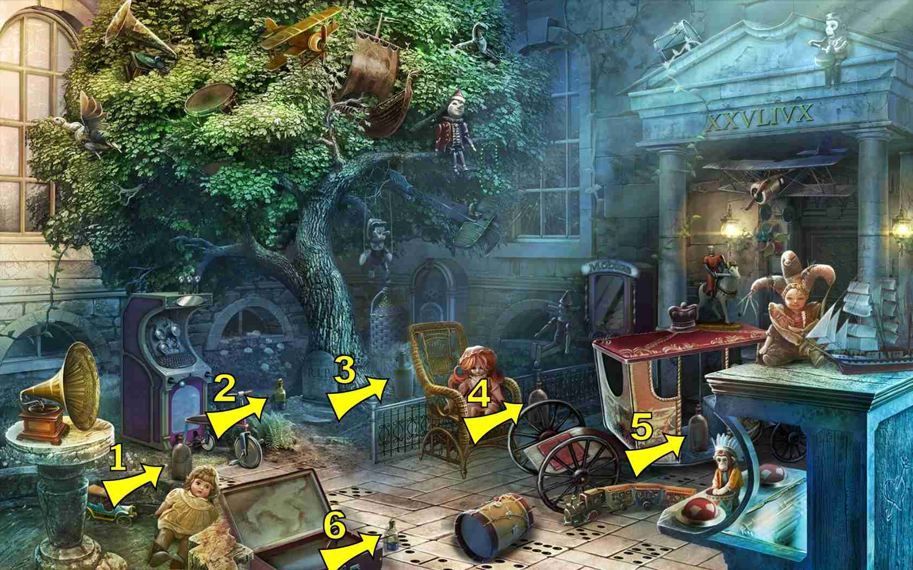

7 items:
- On the sidewalk, center foreground, below the base of the tree


7 items:
6 items:
- Horizontally across top of railing to left of chair
4 items:
- On top of large game machine, left of tree
- In the tree
- Far right center, on the desk
- On the carriage